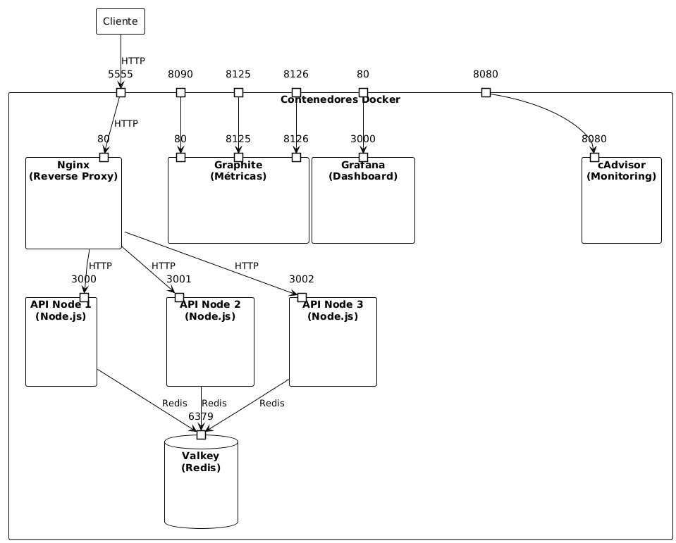
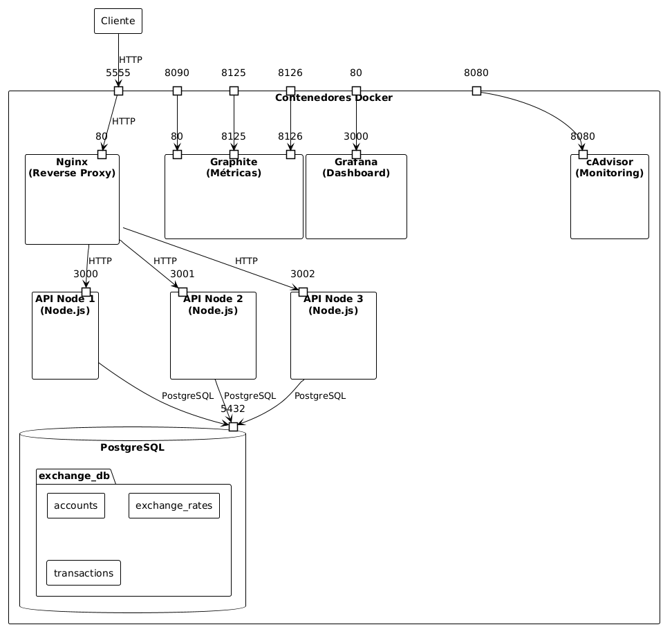

Índice
- 1. Introducción
- 2. Atributos de calidad (QA) claves identificados
- 3. Arquitectura base
- 3.1. Análisis de la influencia de decisiones de diseño en los QA's
- 3.2. Incorporación del stack de monitoreo cAdvisor + Artillery + StatsD + Graphite + Grafana
- 3.3. Impactos del modelo de persistencia elegido
- 3.4. Instancias únicas de cada servicio
- 3.5. Ausencia de un patrón de arquitectura interna
- 3.6. Diagrama C&C inicial.
- 3.7. Crítica a arquitectura base.
- 4. Metodología de pruebas
- 5. Resultados empíricos – Caso base
- 6. Propuestas de mejora
- 7. Resultados empíricos- Propuestas de mejora
- 8. Trade-offs detectados.
- 9. Pedido Adicional (Volumen de transacciones por moneda)
- 10. Conclusiones
1. Introducción
arVault es una startup fintech que opera una billetera digital con un enfoque en ofrecer tasas de cambio competitivas para operaciones entre distintas monedas. En un contexto donde la confianza del usuario es fundamental, la empresa se enfrenta al desafío de mejorar su servicio de cambio de divisas tras recibir múltiples reclamos por problemas de rendimiento y disponibilidad.
El presente trabajo se enmarca en la necesidad de arVault de realizar una auditoría exhaustiva de su arquitectura actual para identificar oportunidades de mejora en los atributos de calidad del sistema. Este análisis resulta crucial para la empresa, ya que su capacidad de atraer nuevas inversiones depende directamente de la confiabilidad y desempeño de su plataforma.
Los objetivos principales de este trabajo práctico son:
- Analizar la arquitectura actual del sistema de cambio de divisas.
- Identificar los atributos de calidad críticos para el negocio.
- Evaluar el impacto de las decisiones de diseño en dichos atributos.
- Proponer e implementar mejoras basadas en tácticas arquitectónicas.
- Medir y comparar el rendimiento antes y después de las modificaciones.
El alcance del análisis abarca tanto aspectos técnicos como de negocio, considerando la infraestructura existente (Node.js, Express, Nginx, etc) y las herramientas de monitoreo implementadas (cAdvisor, StatsD, Graphite, Grafana). Se prestará especial atención a métricas clave como el volumen de operaciones por moneda y el neto de transacciones, tal como lo solicitó el fundador de arVault.
Este informe documenta nuestro proceso de análisis, las decisiones tomadas y los resultados obtenidos, con el fin de proporcionar recomendaciones fundamentadas que permitan a arVault mejorar la calidad de su servicio y recuperar la confianza de sus usuarios e inversores.
2. Atributos de calidad (QA) claves identificados
2.1. Disponibilidad
Al tratarse de un servicio de intercambio de monedas, se considera que su utilización se concentra principalmente durante los días hábiles y en horario cambiario. En consecuencia, es fundamental garantizar su disponibilidad en dichos períodos para evitar la pérdida de usuarios o transacciones.
Asimismo, teniendo en cuenta la necesidad de recuperar la confianza de los usuarios y mejorar la reputación del servicio, el sistema debe ofrecer altos niveles de accesibilidad y permitir la ejecución correcta de las operaciones, manteniendo tiempos de respuesta adecuados y consistentes.
2.2. Escalabilidad (Elasticidad)
La escalabilidad, y en particular la elasticidad, constituyen un atributo de calidad fundamental para el servicio de intercambio de divisas. Esto se debe a que la infraestructura del sistema debe poder adaptarse dinámicamente a las variaciones en la demanda de uso.
En el contexto operativo, es previsible la aparición de picos significativos de actividad en momentos determinados, como la apertura y cierre del horario cambiario, así como también períodos de menor o nula demanda. Además, dado que el servicio busca incrementar rápidamente su base de usuarios, especialmente tras campañas orientadas a mejorar su percepción pública, existe el riesgo de enfrentar incrementos inesperados en el volumen de tráfico.
Si el sistema no contara con la capacidad de escalar de forma elástica, estos picos de operaciones podrían provocar saturación de recursos, generando demoras, rechazos de transacciones o interrupciones del servicio. Tales incidentes impactarían directamente en la percepción y confianza de los usuarios, aspectos clave para el cumplimiento de los objetivos estratégicos de la organización.
2.3. Performance
El atributo de calidad Rendimiento, y en particular el Rendimiento Percibido por el Usuario, resulta de relevancia crítica para el servicio de intercambio de divisas. Esta afirmación se sustenta en el análisis del contexto y los antecedentes disponibles.
Luego del lanzamiento de la funcionalidad, se detectaron reportes de demoras y fallas en la ejecución de operaciones, lo que generó comentarios negativos y una disminución en la confianza hacia la plataforma. En un escenario donde la organización busca atraer nuevas rondas de inversión, estas limitaciones de rendimiento constituyen un riesgo relevante, dado que los potenciales inversores han condicionado su apoyo a la mejora en la calidad del servicio.
En aplicaciones de carácter financiero, la percepción de agilidad y confiabilidad en las respuestas del sistema es un factor determinante. Tiempos de espera prolongados o transacciones fallidas afectan de manera directa la experiencia de las personas usuarias y la credibilidad del sistema. Aunque el valor diferencial del servicio radica en ofrecer tasas de cambio competitivas, dicho beneficio pierde relevancia si la aplicación no responde con la rapidez y estabilidad esperadas.
Por lo tanto, la optimización del Rendimiento Percibido por el Usuario se plantea como una acción prioritaria, orientada a recuperar la confianza de los usuarios actuales, fortalecer la reputación institucional y favorecer la atracción de nuevas inversiones, asegurando la continuidad y el crecimiento del servicio.
2.4. Visibilidad
El valor de este atributo de calidad es más indirecto, pero estratégico, ya que permite comprender el comportamiento real del sistema, identificar cuellos de botella en el rendimiento, localizar errores en las operaciones de cambio y detectar patrones de saturación que puedan anticipar problemas de disponibilidad o escalabilidad. En otras palabras, aunque la visibilidad no impacta de manera inmediata en la experiencia del usuario, proporciona a los arquitectos y al equipo técnico la información necesaria para diagnosticar, mejorar y mantener otros atributos de calidad prioritarios del sistema.
3. Arquitectura base
3.1. Análisis de la influencia de decisiones de diseño en los QA's
En la presente sección se explorarán las decisiones de diseño identificadas en la arquitectura base y su impacto sobre los atributos de calidad estudiados.
3.2. Incorporación del stack de monitoreo cAdvisor + Artillery + StatsD + Graphite + Grafana
El sistema actual presenta un stack de observabilidad para medir, almacenar y visualizar métricas en tiempo real. En concreto:
- cAdvisor: mide métricas de contenedores (CPU, memoria, etc.)
- Artillery: genera carga (testing de rendimiento)
- StatsD + Graphite: recolectan y almacenan métricas
- Grafana: visualiza las métricas
Esta decisión implicó agregar tres nuevos contenedores, configuraciones adicionales, puertos, conexiones en red internas de Docker y dependencias entre servicios, lo cual impactó de diferentes formas a distintos stakeholders.
3.2.1. Impactos identificados
- Carga cognitiva alta: Implicó que desarrolladores y arquitectos del sistema deban comprender cómo se conectan las herramientas, qué hace cada una y cómo interpretar los datos generados. Esto impacta la usabilidad interna (para el desarrollador), la manejabilidad y la simplicidad del sistema, que originalmente se componía solo de un backend y un proxy inverso (Nginx).
- Complejidad operativa: Más contenedores implican más puertos, configuraciones y logs extensos (en particular en el entorno local del trabajo práctico), lo cual aumenta el esfuerzo de debugging y de gestión general. Esto afecta negativamente la manejabilidad, dado que se incrementa la complejidad operativa y el tiempo requerido para mantener el sistema.
- Evaluación y visibilidad del comportamiento del sistema: Cuando el stack se encuentra correctamente configurado, las métricas permiten monitorear el rendimiento, detectar cuellos de botella y observar cómo interactúan los distintos componentes. Esto mejora la visibilidad del sistema y favorece la confiabilidad, ya que permite anticipar fallos o anomalías de comportamiento. No obstante, la dependencia entre múltiples herramientas introduce el riesgo de obtener una visibilidad incompleta si alguno de los servicios del stack (por ejemplo, Graphite o StatsD) deja de funcionar.
- Afectación a la disponibilidad: El aumento en la cantidad de servicios dependientes implica más puntos de falla. Si Graphite o StatsD se detienen, Grafana dejará de mostrar información actualizada. Además, el tiempo de despliegue y recuperación ante fallos se incrementa, afectando la disponibilidad de manera negativa, sobre todo en entornos locales.
- Apoyo a la testeabilidad y diagnóstico: El stack de monitoreo potencia la capacidad de análisis durante pruebas de rendimiento (por ejemplo, al utilizar Artillery y observar las métricas en Grafana). Esto facilita la identificación de comportamientos anómalos y la validación de la estabilidad del sistema, mejorando la testeabilidad. Sin embargo, la infraestructura adicional necesaria para habilitar el monitoreo también introduce complejidad en el entorno de prueba, lo que puede dificultar la reproducibilidad y el control de los experimentos.
- Seguridad y aislamiento: Añadir más servicios amplía la superficie de ataque, ya que cada contenedor es un proceso escuchando en distintos puertos internos. Esto impacta la seguridad operativa, aunque su efecto sea poco relevante en entornos locales de desarrollo.
- Impacto en la portabilidad del sistema: La containerización permite desplegar el stack completo en distintos entornos con relativa facilidad, lo cual favorece la portabilidad técnica. Sin embargo, la fuerte interdependencia entre servicios y las configuraciones específicas de red, puertos y volúmenes reducen la portabilidad práctica, dado que pequeñas diferencias en la infraestructura pueden afectar el funcionamiento o requerir ajustes manuales.
- Interoperabilidad y acoplamiento tecnológico: El uso de protocolos y herramientas estandarizadas (UDP, HTTP, Grafana, StatsD) favorece la interoperabilidad del sistema, tanto entre sus propios componentes como con futuras herramientas externas de monitoreo.
3.3. Impactos del modelo de persistencia elegido
El modelo de persistencia implementado en el sistema consiste en mantener en memoria el estado de los datos y, periódicamente, volcar dicho estado a archivos JSON almacenados localmente en la carpeta ~/state/~.
Esto implica que la persistencia está acoplada directamente a la instancia del servidor —es decir, se trata de un sistema *stateful*—, lo que conlleva una serie de consecuencias relevantes sobre diversos atributos de calidad.
- Acoplamiento con la instancia del servidor: Al vincular el estado con una única instancia, las sesiones de usuario y los datos persistentes no pueden compartirse entre instancias. Esto impide la escalabilidad horizontal, dado que cada réplica tendría su propio estado local no sincronizado. Implementar una gestión de estado distribuido requeriría una infraestructura adicional (por ejemplo, una base de datos externa o un servicio de caché compartido).
- Impacto en la disponibilidad y rendimiento percibido: La existencia de una única instancia con estado convierte al backend en un punto único de falla. Si el servidor se detiene, todas las sesiones activas se pierden y no pueden ser recuperadas por otra instancia. Esto afecta la disponibilidad y la experiencia del usuario, ya que aumenta la percepción de fallas y degradación del rendimiento.
- Problemas de concurrencia: Al utilizar el sistema de archivos local como medio de persistencia, se introducen condiciones de carrera durante operaciones de lectura y escritura concurrentes. El modelo de concurrencia de Node.js (basado en asincronía) no resulta suficiente para garantizar consistencia, dado que el file system no ofrece bloqueo ni sincronización de accesos concurrentes. Esto impacta negativamente la confiabilidad y la consistencia de datos.
- Ausencia de soporte transaccional: El modelo carece de transacciones, por lo que las operaciones no son atómicas ni recuperables ante fallos. En caso de interrupciones durante la escritura, el sistema puede quedar en estados inconsistentes o requerir restauraciones manuales. Esto degrada tanto la disponibilidad como la recuperabilidad.
- Pérdida de integridad de datos: La falta de atomicidad en las operaciones puede dejar al sistema en estados inválidos (por ejemplo, inconsistencias en saldos o cantidades totales). En consecuencia, la integridad del sistema se ve directamente comprometida.
- Incompatibilidad con balanceo de carga: Dado que el modelo de persistencia no soporta replicación, la existencia de un balanceador de carga (como Nginx) se vuelve una decisión cuestionable. No existen múltiples backends entre los cuales distribuir tráfico, y el balanceador introduce una capa de comunicación adicional que degrada el rendimiento sin aportar beneficios reales.
En conjunto, este modelo de persistencia afecta negativamente la disponibilidad, la escalabilidad, la integridad y la mantenibilidad, al tiempo que incrementa la complejidad operativa y el riesgo de errores durante la evolución del sistema.
3.4. Instancias únicas de cada servicio
El sistema fue diseñado de manera que cada servicio (API, proxy inverso Nginx, almacenamiento local, etc.) cuenta con una única instancia activa. Esta decisión genera múltiples puntos únicos de falla y limita severamente la capacidad del sistema para mantener su operación ante fallos parciales.
- Si cualquiera de estos servicios se detiene, el sistema completo se vuelve indisponible, afectando directamente la disponibilidad y la tolerancia a fallos.
- La ausencia de mecanismos automáticos de recuperación o reinicio (como health checks, watchdogs o políticas de restart configuradas en Docker) agrava el impacto de las fallas, ya que se requiere intervención manual para restablecer el servicio.
- Tampoco existen estrategias de replicación, balanceo ni redundancia, lo que hace imposible sostener niveles de servicio adecuados bajo carga o ante degradación de componentes.
Esta configuración puede ser suficiente para entornos de desarrollo o demostración, pero resulta inadecuada para entornos de producción, donde la disponibilidad, resiliencia y recuperabilidad son atributos esenciales.
3.5. Ausencia de un patrón de arquitectura interna
El sistema carece de un patrón de arquitectura claramente definido a nivel interno (por ejemplo, MVC, capas o microservicios), lo cual genera una estructura monolítica y fuertemente acoplada. Esta decisión afecta negativamente atributos clave del sistema relacionados con su evolución y mantenibilidad.
- Dificultad para modificar o extender funcionalidades: La ausencia de separación de responsabilidades y de interfaces desacopladas complica la incorporación de nuevas funcionalidades (extensibilidad) o la modificación segura de las existentes (modificabilidad).
- Incremento en la complejidad del código: La lógica de negocio, de presentación y de persistencia tienden a mezclarse, lo que eleva la complejidad cognitiva y el riesgo de introducir errores.
- Falta de testabilidad: Al no existir módulos claramente delimitados, las pruebas unitarias o de integración se vuelven difíciles de implementar, afectando la testeabilidad del sistema.
- Escasa capacidad de evolución: La arquitectura monolítica limita la posibilidad de migrar gradualmente a tecnologías más modernas o de reestructurar componentes de forma incremental.
En conjunto, esta ausencia de estructura arquitectónica limita la mantenibilidad, evolutividad, testeabilidad y extensibilidad, dificultando la gestión del ciclo de vida del software.
3.6. Diagrama C&C inicial.

3.7. Crítica a arquitectura base.
4. Metodología de pruebas
Con el propósito de realizar pruebas y tener una medición de los atributos de calidad relevantes del sistema, se realizaron pruebas de carga sobre la aplicación mediante la herramienta Artillery y junto con StatsD, Graphite, Grafana y Datadog, se realiza la recolección y visualización de los datos de desempeño, incluyendo métricas como tiempos de respuesta, errores y uso de recursos, lo que permite evaluar la capacidad del sistema para manejar diferentes niveles de carga y detectar posibles cuellos de botella.
4.1. Set up para recolección y visualización de datos
4.1.1. Graphit + Grafana
4.1.2. StatsD (métricas custom)
En la app se agregaron métricas propias con hot-shots (cliente StatsD/DogStatsD) usando el prefijo arvault.. Se emiten en dos puntos: (a) middleware HTTP para latencia y throughput, y (b) lógica de negocio del exchange para volumen y estado de las operaciones.
- HTTP (Performance)
arvault.api.response_time(timing, ms): latencia por request medida en el middleware. Útil para ver p50/p95/p99 y detectar degradaciones bajo carga.arvault.api.requests(counter): throughput de la API. Sirve para correlacionar picos de tráfico con cambios en latencia y calcular tasas (p. ej., error rate).
- Negocio (Visibilidad, Disponibilidad proxy)
arvault.exchange.transactions(counter): total de operaciones de intercambio. Base para segmentar por par de monedas y estado.arvault.exchange.successful_transactions(counter): operaciones exitosas; permite estimar disponibilidad efectiva percibida.arvault.exchange.failed_transactions(counter): operaciones fallidas; se usa con la anterior para ver el ratio de fallas.
arvault.exchange.base_amount/arvault.exchange.counter_amount(gauge): montos de la operación en moneda base y contraparte. Ayudan a entender volumen económico y detectar outliers.arvault.exchange.rate(gauge): tasa aplicada al momento del intercambio. Útil para auditar cambios de precio y drift respecto de configuraciones.arvault.volume.by_currency(gauge): volumen porcurrencyyoperation(buy/sell). Indica monedas demandadas y patrones de demanda.arvault.volume.operations_count(counter): cantidad de operaciones por dimensión de volumen; complementa el gauge para ver frecuencia sin importar el monto.arvault.volume.net(gauge): balance neto por moneda (positivo enbuy, negativo ensell). Sirve para monitorear exposición neta / liquidez.arvault.account.balance(gauge): balances reportados por cuenta/moneda. Útil para verificar disponibilidad de fondos y umbrales operativos.
- Errores (Confiabilidad)
arvault.errors.count(counter)
Las métricas incluyen tags según el caso (p. ej., endpoint, method, status_code, currency, operation, base_currency, counter_currency, success, y metadatos globales service, env). Estas señales se usan luego para contrastar escenarios de carga y fundamentar observaciones sobre Performance, Disponibilidad y Visibilidad.
4.1.3. DataDog (logs + métricas etiquetadas)
Se habilitó logging estructurado y el envío de métricas etiquetadas compatibles con DogStatsD.
- Logs JSON con
winston- Formato:
timestamp, captura deerrors({ stack: true }), ydefaultMeta(service,env,version). - Registros implementados:
logRequest: método, URL/path,status_code,response_time,user_agent, IP,request_id.logValidationError: errores de entrada (tipo, mensaje,endpoint,request_data).logSystemError: fallas internas (mensaje,stack, nombre de error,context).logExchangeTransaction: resultado de intercambio (ok/falla), IDs de cuentas, monedas, montos,exchange_rate, mensaje de error si aplica.logPerformance: duración de operaciones puntuales.logLifecycleEvent: eventos de ciclo de vida (ej.,startup).
- Formato:
- Métricas con tags (DogStatsD)
- Las métricas
arvault.*anteriores se envían con tags (p. ej.,endpoint,method,status_code,currency,operation,base_currency,counter_currency,success, además deservice,env,version). - Esto permite segmentar los indicadores de Performance y Visibilidad por dimensiones de negocio y técnicas.
- Las métricas
4.1.4. DataDog (dashboard)
Armamos un dashboard simple para entender las fallas criticas del servicio y ademas entender el dominio del negocio. La idea es cubrir tres frentes a la vez: Performance (qué tan rápido respondemos), Disponibilidad/Confiabilidad (qué tan seguido falla) y Visibilidad (qué parte del negocio está más activa).
- Requests per endpoint
Cuántas llamadas recibe cada ruta. Con esto vemos cuáles son las más usadas y dónde conviene poner foco de capacidad.
Figura 1: Requests por endpoint
- Status Codes Distribution
La mezcla de 200/4xx/5xx a lo largo del tiempo. Es nuestro termómetro de salud: muchos 5xx = algo se rompió del lado servidor; pico de 4xx = validaciones/UX para revisar.

Figura 2: Distribución de status codes
- Exchange – Success rate
Porcentaje de transacciones que salen bien vs. fallan. Cuando baja, impacta directo al negocio y hay que mirar lógica y dependencias.

Figura 3: Tasa de éxito de transacciones de exchange
- Exchange – Total transactions
Volumen bruto de operaciones. Útil para ver actividad, comparar días y estimar capacidad necesaria.
Figura 4: Total de transacciones de exchange
- Volume by currency
Cuánta actividad concentra cada moneda (USD, ARS, EUR, …). Ayuda con liquidez y prioridades: dónde hay más movimiento, ahí hay más riesgo/atención.

Figura 5: Volumen por moneda
- Net volume by currency
Compras menos ventas por moneda. Si el neto de USD es muy negativo, estamos vendiendo más de lo que compramos: ojo con la posición.
Figura 6: Volumen neto por moneda
- Exchange rates
Las tasas vigentes por par. Sirve para chequear precios, detectar volatilidad y cuidar márgenes.

Figura 7: Tasas de cambio por par
- Error count por tipo
Los errores agrupados por categoría (p. ej.,
validation_error,exchange_failed). Da pista rápida de dónde conviene atacar: UX/validaciones o lógica interna.
Figura 8: Conteo de errores por tipo
- KPIs de resumen
Un par de tarjetas con lo esencial: throughput, total de transacciones y total de errores. Es la vista “de un vistazo” para status diario y alertas.

Figura 9: KPIs de resumen (requests, transacciones, errores)
4.2. Generación de carga
Con propósito de observar la aplicación se generaron diferentes escenarios de carga, uno de baja carga con el propósito de observar el comportamiento de la API en un momento de uso con baja intensidad y otro de uso con alta intensidad representando los posibles escenarios en los que se encuentre la aplicación en producción.
Los escenarios se aplicarán a cada uno de los endpoints, si es un endpoint GET, se generan muchas consultas a la API por el mismo endpoint, mientras que en casos de PUT se interactúa con las distintas monedas generando una carga más variada y simulando una situación lo más realista posible.
Los patrones son los siguientes:
Para una carga y observar un comportamiento genérico de la app:
phases:
- name: Ramp
duration: 30
arrivalRate: 1
rampTo: 5
- name: Plain
duration: 60
arrivalRate: 5
Mientras que para uso intensivo de la aplicación se usa el mismo patrón pero variando los valores:
phases:
- name: Ramp
duration: 30
arrivalRate: 0
rampTo: 1000
- name: Plain
duration: 60
arrivalRate: 500
Por lo tanto ambas cargas serán aplicadas a los endpoints considerando la variabilidad de los datos en el caso que sea necesario
4.3. Graficos
En líneas generales se presentan 4 gráficos:
- Scenarios launched (stacked): Este gráfico muestra los escenarios que se están ejecutando, en caso de ser la prueba de un método GET, no habrá variabilidad en los casos, por otro lado, cuando se trate de un POST o un PUT se podrán apreciar la variabilidad en los escenarios de prueba configurados
- Requests state (stacked): Muestra el estado de las request, se grafican principalmente los escenarios en los cuales la API contesta a la request con un código 200, en algunos casos, se apreciarán la graficación de errores los cuales consideran: ECONNRESET y ETIMEDOUT
- Request time (client-side): Que permite obtener una magnitud de la performance del producto como también del tiempo que toma a la aplicación en contestar una request
- Resources: Este gráfico permite observar los recursos utilizados por el ordenador tales como: CPU y memoria RAM
Estos gráficos no permiten tener una visibilidad amplia y global sobre el funcionamiento de la aplicación como también entender el comportamiento de los Atributos de calidad claves de la aplicación
5. Resultados empíricos – Caso base
5.1. Prueba con carga baja
Se procede a presentar los datos de pruebas recolectados en un escenario de baja carga
5.1.1. Análisis del endpoint GET Rates
Por la simplicidad del endpoint y dada la falta de parámetros que tiene el mismo, el gráfico representa la evolución a través del tiempo de la cantidad de consultas que son realizadas al endpoint

De los datos se puede extraer que en un escenario de baja carga de la API, se observa que la totalidad de las consultas fue contestada de manera satisfactoria
De este gráfico se puede extraer información sobre el tiempo de procesamiento y la latencia existente entre el cliente y la aplicación, debido a ser un escenario de pruebas en este caso la latencia es un valor despreciable, mientras que se puede apreciar la evolución del tiempo de procesamiento y se podría considerar la relación existente entre este y la cantidad de request que se encuentra procesando el servidor en el momento

Finalmente la cantidad de recursos del ordenador usadas para procesar las consultas no parece ser representativa, se puede concluir que en escenarios de baja intensidad la API responde de manera eficiente y tanto la performance percibida por el usuario como la disponibilidad no se ven afectados en estos escenarios
5.1.2. Análisis del endpoint PUT rates
Al tratarse de un método PUT, la variabilidad entre los diferentes tipos de monedas utilizadas se puede usar para ejemplificar el funcionamiento en el test, por lo tanto, se puede apreciar que hay una tendencia a realizar cuatro tipos de transacciones diferentes considerando las distintas monedas

Como en el caso anterior, todas las peticiones al servidor respondieron de manera satisfactoria a los clientes

Una vez más se puede apreciar la tendencia a que el uso de recursos (en este caso del CPU) sea más intensivo en el período más temprano en que se realiza el test, es importante aclarar que la recta verde representa los máximos registrados, un valor más parecido al real percibido por el cliente es la media del tiempo de respuesta que también se encuentra en el gráfico
Nuevamente se observa que no existe un uso excesivo de los recursos del ordenador, por lo tanto, en escenarios de baja intensidad el endpoint contesta de manera satisfactoria a las transacciones
5.1.3. Análisis del endpoint POST exchange

Como en el caso del endpoint anterior, se agrega variabilidad en los escenarios de prueba para simular de manera más realista el escenario de la aplicación que se encuentra en producción, los escenarios están dispuestos que ocurran de manera equiprobable

Todos los POST fueron realizados de manera exitosa sin presentar ningún problema en la aplicación
A comparación de los otros endpoints analizados, es evidente que la finalización de esta tarea tiene un orden de magnitud superior a los otros casos, véase que en las pruebas anteriores el máximo de los tiempos de ejecución se encontraba alrededor de los 30 ms mientras que la media se encontraba alrededor de los 20 ms, para este endpoint los tiempos de ejecución se van hasta el rango de los 600 - 800 ms. Esta prueba permite identificar que este endpoint puede ser un posible cuello de botella en un caso de alto volumen de transacciones

Finalmente observando el uso de los recursos del ordenador, se destaca el uso del CPU, para llevar a cabo este conjunto de operaciones el uso del CPU escaló a casi el 1% de su uso. Con este resultado y el anterior es fácil identificar a este endpoint como uno de los posibles casos a considerar para aplicar estrategias en busca de mejorar la performance, esto, pensando a futuro en escenarios de uso intensivo de la aplicación
Además de la información anteriormente recolectada, para evitar la repetición sobre la evidencia se descarta la presentación de las pruebas para los otros endpoints, puesto que la información recolectada fue similar y no fue concluyente a la hora de determinar nuevas estrategias arquitectónicas que no puedan ser deducidas de los problemas que fueron encontrados anteriormente en el resto de endpoints
5.2. Prueba con carga alta
Se presentan los datos de pruebas recolectados en un escenario de alta carga de la aplicación.
5.2.1. Análisis del endpoint GET Rates
Las mediciones del comportamiento del sistema (scenarios launched, requests state, request time y resources) en un escenario de alta carga haciendo uso específicamente del endpoint GET rates son las siguientes:

Como en el caso de baja carga y debido a la simplicidad del endpoint en el grafico se aprecian la cantidad de request realizadas por segundo

Observando el resultado de la prueba se observa que a medida que la carga va creciendo el servidor responde de manera correcta a las consultas realizadas, pero una vez que la cantidad de consultas que van llegando se estabiliza se puede apreciar el inicio del fallo del servidor en la capacidad de contestar a los clientes, estos casos de error que se muestran son tanto errores por timeout como cierre de conexiones inesperadas

Tambien se aprecia que a medida que aparecen casos de error los tiempos de respuestas en los clientes empiezan a escalar llegando a alcanzar un pico de casi 10 segundos para conseguir responder a una consulta. Esto es un claro indicio de problemas de performance y de disponibilidad de la aplicacion, atributos que han sido establecidos como clave para esta arquitectura

Se observa que el modulo de la api no presenta uso excesivo de los recursos del ordenador dada la cantidad de clientes que intentan realizar consultas
5.2.2. Análisis del endpoint PUT rates
Ahora se analiza el endpoint que realiza put de los rates a la API

En este gráfico se aprecia la variabilidad de los casos de prueba que se realizaron, ya que el endpoint PUT permite modificar tasas para diferentes pares de monedas.

Bajo carga alta, se observa que inicialmente todas las requests son procesadas correctamente, pero a medida que aumenta la intensidad, comienzan a aparecer errores de tipo timeout y cierre inesperado de conexiones, similar a lo observado en el endpoint GET. Esto evidencia que el sistema, en su arquitectura base, no logra sostener la disponibilidad y performance cuando la concurrencia crece.
Similar al endpoint analizado anteriormente nuevamente el tiempo promedio y el tiempo maximo escalan a casi los 10 segundos y los 4 segundos respectivamente, siendo clara evidencia que la disponibilidad y la performance la arquitectura no son capaces de soportar escenarios de carga muy alta por parte de los usuarios

Como en el caso anterior no se observa un uso excesivo de los recursos para el nodo de la api.
5.2.3. Análisis del endpoint POST exchange

Se observa la simulacion de casos variados de pruebas para el endpoint post exchange, el analisis de este endpoint es crucial ya que en el caso de baja carga se observo que dicho endpoint era el mas complejo de ejecutarse

Debido a los datos recolectados, era evidente, que para este caso ocurriria una situacion similar al realizar la carga en el servidor, esto se debe a la observacion de casos de error por parte de los clientes simil a los casos evaluados anteriormente

Una vez mas la performance y la disponibilidad del servicio se ven comprometidas y los tiempos de respuesta crecen exponencialmente en escenario de carga alta, alcanzando tambien el rango de los 4-10 segundos para conseguir contestar una respuesta en los clientes por parte del servidor

En este caso si se aprecia considerablemente el el crecimiento en el uso de los recursos, esto debido a la complejidad en la realizacion del post como tambien la cantidad de operaciones realizadas en un esceneario de carga muy alta
5.2.4. Consumo de recursos del Balanceador de carga
Adicionalmente es interesante observar el consumo de recursos del balanceador de carga que se encuentra trabajando en conjunto con la api, esto para cada uno de los escenarios intensivos. Se presenta entonces la recoleccion de datos sobre el uso de los recursos del computador por parte del balanceador de carga:

Figura 10: Carga del loadbalancer para get Rates

Figura 11: Carga del loadbalancer para Put Rates
Figura 12: Carga del loadbalancer para Post Exchange
Finalmente, es facil concluir que el sistema base no posee la capacidad de soportar escenearios de alta carga, comprometiendo la disponibilidad y la performance de un servicio que precisamente busca atraer clientes mediante la mejora de estos atributos de calidad claves
6. Propuestas de mejora
6.1. Implementación de Valkey como persistencia
6.1.1. Táctica aplicada
La implementación utiliza Valkey como almacén de datos centralizado, reemplazando la persistencia en archivos JSON. Los datos se almacenan como claves en Redis:
accounts: Almacena la lista de cuentas de usuario en formato JSON.rates: Contiene las tasas de cambio entre monedas.log: Registra el historial de transacciones realizadas.
El módulo valkey.js proporciona funciones asíncronas para inicializar la conexión (init()), obtener datos (getAccounts(), getRates(), getLog()) y actualizarlos (setAccounts(), setRates(), setLog()). Estas funciones serializan/deserializan los datos a JSON para almacenarlos como strings en Redis.
En exchange.js, se importa y utiliza este módulo para todas las operaciones de persistencia, reemplazando las lecturas/escrituras directas a archivos. La inicialización se realiza al inicio de la aplicación con await valkeyInit().
6.1.2. Configuración
Se agregó un servicio valkey en el docker-compose.yml utilizando la imagen valkey/valkey:8.1.4-alpine, expuesto en el puerto 6379. La aplicación se conecta mediante la variable de entorno VALKEY_URL=redis://valkey:6379.
6.1.3. Beneficios
Al centralizar el estado en Valkey, múltiples instancias de la API pueden compartir el mismo almacén de datos. Esto elimina la dependencia de estado local en memoria o archivos, permitiendo:
- Escalado horizontal sin pérdida de consistencia.
- Persistencia real de los datos, sobreviviente a reinicios de contenedores.
- Operaciones atómicas en Redis para transacciones financieras.
Esta táctica mejora significativamente la Disponibilidad y Escalabilidad, mitigando los puntos únicos de falla relacionados con la persistencia local.

6.2. Implementación de PostgreSQL como persistencia
6.2.1. Táctica aplicada
La implementación utiliza PostgreSQL como almacén de datos relacional, reemplazando la persistencia en archivos JSON y Valkey. Las tablas creadas son:
accounts: Almacena las cuentas de usuario con campos como id, currency, balance, createdat, updatedat, deleted.exchange_rates: Contiene las tasas de cambio entre monedas con basecurrency, countercurrency, rate, updatedat.transactions: Registra el historial de transacciones realizadas, con soporte para atomicidad en operaciones de intercambio.
El módulo databaseAdapter.js proporciona funciones para conectarse a PostgreSQL usando el paquete pg, manejando conexiones y transacciones. Los modelos en models/ (Account, ExchangeRate, Transaction) manejan las operaciones CRUD con soporte para transacciones ACID.
En exchange.js, se utilizan estos modelos para todas las operaciones financieras, incluyendo transacciones atómicas para intercambios que requieren consistencia (ej. actualizar balances y registrar transacción en una sola operación).
6.2.2. Configuración
Se agregó un servicio postgres en el docker-compose.yml utilizando la imagen postgres:15-alpine, con inicialización de la base de datos mediante el script 01-init.sql que crea las tablas, índices y datos iniciales.
Se configuraron tres instancias de la API (api1, api2, api3) conectadas a PostgreSQL, permitiendo escalado horizontal sin pérdida de estado.
Se actualizó nginx_reverse_proxy.conf para balancear carga entre las tres instancias de API utilizando un bloque upstream.
6.2.3. Beneficios
Al centralizar el estado en PostgreSQL con transacciones ACID, múltiples instancias pueden compartir el mismo almacén de datos de forma consistente y atómica. Esto elimina dependencias de estado local, permite escalado horizontal sin pérdida de consistencia, y asegura atomicidad en operaciones financieras críticas, mejorando la integridad de datos.
Esta táctica mejora significativamente la Disponibilidad (reduciendo puntos únicos de falla en persistencia), Escalabilidad (permitiendo más nodos con estado compartido), y Performance (con transacciones eficientes, concurrencia controlada y consultas optimizadas con índices).

6.3. Comparación de estados de requests
Figura 13: Estado de requests en la arquitectura base
En la arquitectura base, se observa una alta tasa de errores debido a la sobrecarga de la única instancia de la API y problemas de concurrencia en el acceso a archivos JSON locales, lo que resulta en fallos de conexión y respuestas erróneas bajo carga elevada.

Figura 14: Estado de requests con la propuesta de mejora (PostgreSQL y balanceo de carga)
Con la propuesta de mejora que incluye balanceo de carga entre tres nodos y PostgreSQL como persistencia, la tasa de errores se reduce significativamente. El balanceo de carga distribuye la carga uniformemente entre los nodos, evitando la saturación de un solo punto, mientras que PostgreSQL maneja mejor la concurrencia mediante transacciones ACID y acceso controlado a la base de datos, minimizando errores por conflictos de acceso a datos y mejorando la estabilidad general del sistema.
7. Resultados empíricos- Propuestas de mejora
7.1. Propuesta - Valkey/Redis
En las propuestas de mejoras se busca principalmente mejorar la experiencia de los usuarios en escenarios de alta carga sobre la aplicación, dadas las conclusiones resultantes de la sección 5, se analizarán la evolución de las propuestas únicamente en escenarios de alta carga para la aplicación.
Se presentan los resultados de haber integrado Valkey en la aplicación:
7.1.1. Rates


7.1.2. Exchange